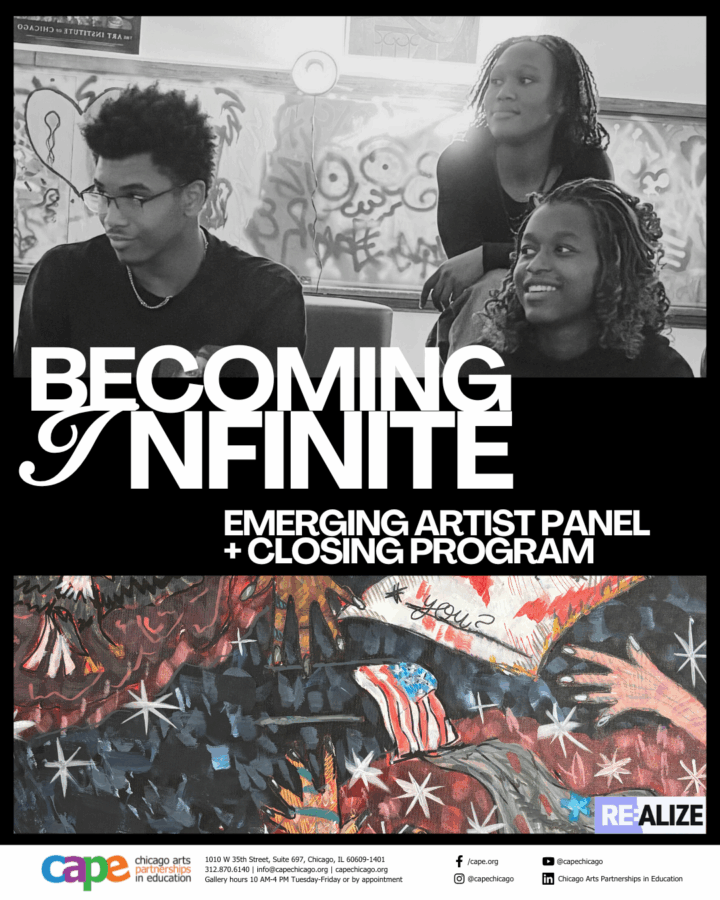

RE:ALIZE Artist Panel & Closing Reception: POSTPONED
THIS EVENT HAS BEEN POSTPONED TO JANUARY 30TH FROM 2-4:30PM AND WILL BE HELD VIRTUALLY
As the Becoming Infinite exhibition comes to a close, join us for an intimate conversation with the young artists behind the work. During this reflective panel, RE:ALIZE students will share insights into their creative process, inspirations, and the stories that shaped their performances and artworks.
Through dialogue, the artists will explore the themes of growth, transformation, and infinite becoming—offering a glimpse into how art has helped them expand their sense of self and community. This closing event invites audiences to listen, connect, and celebrate the voices of a generation reimagining what creativity can be.
Please let us know you’re coming! RSVP here: https://forms.fillout.com/t/3qqXZhREdAus